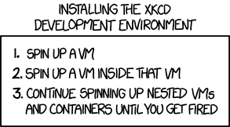

<!doctype html>
<html lang="en">
    <head>
        <meta charset="utf-8">
        <title>Drupal Development with Docker</title>
        <link rel="stylesheet" href="./css/reveal.css">
        <link rel="stylesheet" href="./css/theme/serif.css" id="theme">
        <link rel="stylesheet" href="./css/highlight/zenburn.css">
        <link rel="stylesheet" href="./css/print/paper.css" type="text/css" media="print">
          <link rel="stylesheet" href="./assets/./css/dcla2017_docksal.css">

    </head>
    <body>

        <div class="reveal">
            <div class="slides"><section  data-markdown><script type="text/template">

<!-- .slide: data-background="./images/drupalcampla-presentation-template-1024x768.png" -->
## Drupal Development with Docker

Casey Grzecka<div class="fragment">_`@z3cka`_</div>
#### UCLA Library
</script></section><section  data-markdown><script type="text/template">
<!-- .slide: data-background="./images/drupalcampla-presentation-template-1024x768.png" -->
### My Local Dev Docker Arc
1. look for existing tool <span class="fragment">(drude)</span>
2. roll my own <span class="fragment">(z3cka/c9-phpbrew-drupal)</span>
3. look again and discover <span class="fragment">(Docksal)</span>

<aside class="notes"><h3 id="purpose-of-this-talk">purpose of this talk</h3>
<ol>
<li>question feasability and value (tell brief Drude story) - <a href="https://github.com/blinkreaction/dde">https://github.com/blinkreaction/dde</a></li>
<li>feel the pain</li>
<li>joy of not reinventing the wheel</li>
<li>show and learn about a really great tool</li>
</ol>
</aside></script></section><section ><section data-markdown><script type="text/template">
<!-- .slide: data-background="./images/drupalcampla-presentation-template-1024x768.png" -->
# Docker

<aside class="notes"><ul>
<li>Basic background</li>
<li>good for deployment</li>
</ul>
</aside></script></section><section data-markdown><script type="text/template">

<!-- .slide: data-background="./images/drupalcampla-presentation-template-1024x768.png" -->
## Why local Docker
<ul>
  <li class="fragment">VM vs container</li>
  <li class="fragment">better resource utilization</li>
  <li class="fragment">dependency isolation</li>
  <li class="fragment">separation of concerns</li>
</ul>

<aside class="notes"><ul>
<li>VM vs container</li>
<li>better resource utilization</li>
<li>dependency isolation</li>
<li>separation on concerns</li>
</ul>
</aside></script></section></section><section  data-markdown><script type="text/template">
<!-- .slide: data-background="./images/drupalcampla-presentation-template-1024x768.png" -->
#### Why Roll your own local Docker Dev
<ul>
    <li class="fragment">my vagrant local Host mounted fs via virtualbox was sooooo slow</li>
    <li class="fragment">mimic arch that we will be deploying to</li>
    <li class="fragment">multiple projects with diff deps</li>
    <li class="fragment">docker was so new and shiny</li>
    <li class="fragment">I don't like (manually configuring) VMs</li>
    <li class="fragment">docker native in linux</li>
</ul>

<aside class="notes"><ul>
<li>What does it take? My experience rolling my own.  </li>
<li>fixed mount by nfs4 maybe</li>
</ul>
</aside></script></section><section  data-markdown><script type="text/template">
<!-- .slide: data-background="./images/drupalcampla-presentation-template-1024x768.png" -->
#### When Rolling your own local Docker Dev
* Don't treat you container like a VM
<ul>
    <li class="fragment">unless you want to</li>
    <li class="fragment">do what you want</li>
</ul>
<div class="fragment">
    `docker run -it ubuntu bash`
</div>
<ul>
    <li class="fragment">and you are off</li>
    <div class="fragment">`apt get install vim foo`</div>
</ul>

<aside class="notes"><ul>
<li>I&#39;m not your mom</li>
<li>that&#39;s how I started</li>
</ul>
</aside></script></section><section ><section data-markdown><script type="text/template">
<!-- .slide: data-background="./images/drupalcampla-presentation-template-1024x768.png" -->
### Doing the Old Way, the New Way
* you need ports open, services started, volumes mounted, etc.
* so, let's just re-run with new configs, wrong, can't data does not persist without volume mounted, host or otherwise
* so, build the repetitive tasks into a Dockerfile...
* so easy, basically bash
* and make each image inherit only what it needs...
* show z3cka/c9 + php + drupal 
    * where do we install and run MySQL?

<aside class="notes"><ol>
<li><p>you could docker export or commit or something, but don&#39;t</p>
</li>
<li><p>are you feeling the pain?</p>
</li>
<li>does this seem better?</li>
</ol>
</aside></script></section><section data-markdown><script type="text/template">

<!-- .slide: data-background="./images/drupalcampla-presentation-template-1024x768.png" -->
#### Can we start coding drupal awesomeness yet? 
<div class="fragment">No!!!! We have more local arch to manage!</div>

</script></section><section data-markdown><script type="text/template">

<!-- .slide: data-background="./images/drupalcampla-presentation-template-1024x768.png" -->
## Separate concerns
* Put services in different containers
* do the next iteration of clown computing just with containers
* use docker-compose
    * yaml that sets up all your services

</script></section><section data-markdown><script type="text/template">

<!-- .slide: data-background="./images/drupalcampla-presentation-template-1024x768.png" -->

>Docker is awesome, and fun to play with!  —Me

</script></section><section data-markdown><script type="text/template">

<!-- .slide: data-background="./images/drupalcampla-presentation-template-1024x768.png" -->
### but...

## XKCDE
> `4. They unplug the root machine but the thousands of leaf VMs scatter in the wind and start spinning up new instances wherever they land


</script></section><section data-markdown><script type="text/template">

<!-- .slide: data-background="./images/drupalcampla-presentation-template-1024x768.png" -->
#### Wouldn't it be nice if you didnt have to start from scratch?
* everything in the lamp stack has been dockerized already
* use a tool
* what if I told you this tool would manage your VM too!?
</script></section></section><section ><section data-markdown><script type="text/template">
<!-- .slide: data-background="./images/drupalcampla-presentation-template-1024x768.png" -->
## Introducing Docksal
  
`Dock---s-----al`  
`Docker s Drupal`

<aside class="notes"><ul>
<li>Say generally what it does</li>
</ul>
</aside></script></section><section data-markdown><script type="text/template">

<!-- .slide: data-background="./images/drupalcampla-presentation-template-1024x768.png" -->
>Maybe the 's' is from the 's' in dorsal; as in the dorsal fin of the Docker whale.  
—S. Gurnick

</script></section><section data-markdown><script type="text/template">

<!-- .slide: data-background="./images/drupalcampla-presentation-template-1024x768.png" -->

## What is Docksal?
  

<aside class="notes"><p>Docksal is a tool for defining and managing development environments. It brings together common tools, minimizes configuration, and ensures environment consistency throughout your continuous integration workflow.</p>
</aside></script></section><section data-markdown><script type="text/template">

<!-- .slide: data-background="./images/drupalcampla-presentation-template-1024x768.png" -->
## Features

`fin`   
  
FTW!

<aside class="notes"><p>Docksal uses Docker to create fully containerized environments. It also uses Virtual Box to support MacOS and Windows. Its main feature is the inclusion of a command-line tool, called fin, that simplifies the management of all components.</p>
</aside></script></section><section data-markdown><script type="text/template">

<!-- .slide: data-background="./images/drupalcampla-presentation-template-1024x768.png" -->
## Toolbox

Docksal comes preloaded with common Drupal development tools like:
* Drush 
* Drupal Console
* Composer
* PHP Code Sniffer
* php-cli
* It also comes with node, npm, ruby, bundler, and python.

</script></section><section data-markdown><script type="text/template">

<!-- .slide: data-background="./images/drupalcampla-presentation-template-1024x768.png" -->
## Services
### Built-in support for 
* Apache Solr 
* Varnish 
* Memcache 
* Selenium
* Behat. 
 
And since services are containerized with Docker, any other service needed for a project can be added!
</script></section></section><section  data-markdown><script type="text/template">
<!-- .slide: data-background="./images/drupalcampla-presentation-template-1024x768.png" -->
## Docksal VM management
* Docker still needs a VM to run on OS X* _le sigh_
Commands
    * `fin start`/`stop`/`kill`
    * `fin ram` – show and set memory of the vm
    * `fin hdd` – Show disk size and usage
    * `fin stats` – Show CPU and network usage

<aside class="notes"><ul>
<li>technically the &quot;native&quot; Mac OS is still a small vm called xyve (or something like that)</li>
</ul>
</aside></script></section><section  data-markdown><script type="text/template">
<!-- .slide: data-background="./images/drupalcampla-presentation-template-1024x768.png" -->
## Docksal Project handling

* `fin pl` — project list
* `fin project create` demo in a bit
* existing project support _(will show this as well)_
</script></section><section  data-markdown><script type="text/template">
<!-- .slide: data-background="./images/drupalcampla-presentation-template-1024x768.png" -->
## Docksal envronment
* Env file
    * set docroot
    * enable xdebug
</script></section><section  data-markdown><script type="text/template">
<!-- .slide: data-background="./images/drupalcampla-presentation-template-1024x768.png" -->
## Docksal Servies – yaml
Define services via docker-compose with images, etc.
* apache/php version via docker images: 
    * `docksal/web:1.0-apache2.2`
    * `docksal/cli:1.2-php7`
* add solr to drupal – _UCLA Library demo_
</script></section><section ><section data-markdown><script type="text/template">
<!-- .slide: data-background="./images/drupalcampla-presentation-template-1024x768.png" -->
## Docksal cli:  `fin`  
Examples:

    fin db dump ~/dump.sql            #Export!
    fin db import ~/dump.sql          #Import!

    fin bash [service]   #Open shell into service's container.
    exec <command|file>  #Execute a command or a script in cli
    ssh-add [-lD] [key]  #Adds ssh private key to the authentication 
                         #agent (fin help ssh-add)


</script></section><section data-markdown><script type="text/template">

<!-- .slide: data-background="./images/drupalcampla-presentation-template-1024x768.png" -->
## Docksal cli:  `fin`  
Examples: _(con't)_

    fin drush [command]     #Execute Drush command (Drupal)
    fin drupal [command]    #Execute Drupal Console command (D8)
    fin wp [command]        #Execute WP-CLI command (WordPress)
</script></section></section><section  data-markdown><script type="text/template">
<!-- .slide: data-background="./images/drupalcampla-presentation-template-1024x768.png" -->
## Docksal share!!!
    fin share
### Built in https://ngrok.io/ support!
</script></section><section  data-markdown><script type="text/template">
<!-- .slide: data-background="./images/drupalcampla-presentation-template-1024x768.png" -->
Try anything! (Almost)
* Git gogs server + droneCI
* get crazy with anything you can run with Docker


</script></section></div>
        </div>

        <script src="./lib/js/head.min.js"></script>
        <script src="./js/reveal.js"></script>

        <script>
            function extend() {
              var target = {};
              for (var i = 0; i < arguments.length; i++) {
                var source = arguments[i];
                for (var key in source) {
                  if (source.hasOwnProperty(key)) {
                    target[key] = source[key];
                  }
                }
              }
              return target;
            }

            // Optional libraries used to extend on reveal.js
            var deps = [
              { src: './lib/js/classList.js', condition: function() { return !document.body.classList; } },
              { src: './plugin/markdown/marked.js', condition: function() { return !!document.querySelector('[data-markdown]'); } },
              { src: './plugin/markdown/markdown.js', condition: function() { return !!document.querySelector('[data-markdown]'); } },
              { src: './plugin/highlight/highlight.js', async: true, callback: function() { hljs.initHighlightingOnLoad(); } },
              { src: './plugin/zoom-js/zoom.js', async: true },
              { src: './plugin/notes/notes.js', async: true },
              { src: './plugin/math/math.js', async: true }
            ];

            // default options to init reveal.js
            var defaultOptions = {
              controls: true,
              progress: true,
              history: true,
              center: true,
              transition: 'default', // none/fade/slide/convex/concave/zoom
              dependencies: deps
            };

            // options from URL query string
            var queryOptions = Reveal.getQueryHash() || {};

            var options = {"transition":"fade"};
            options = extend(defaultOptions, options, queryOptions);
        </script>


        <script>
            Reveal.initialize(options);
        </script>
    </body>
</html>
